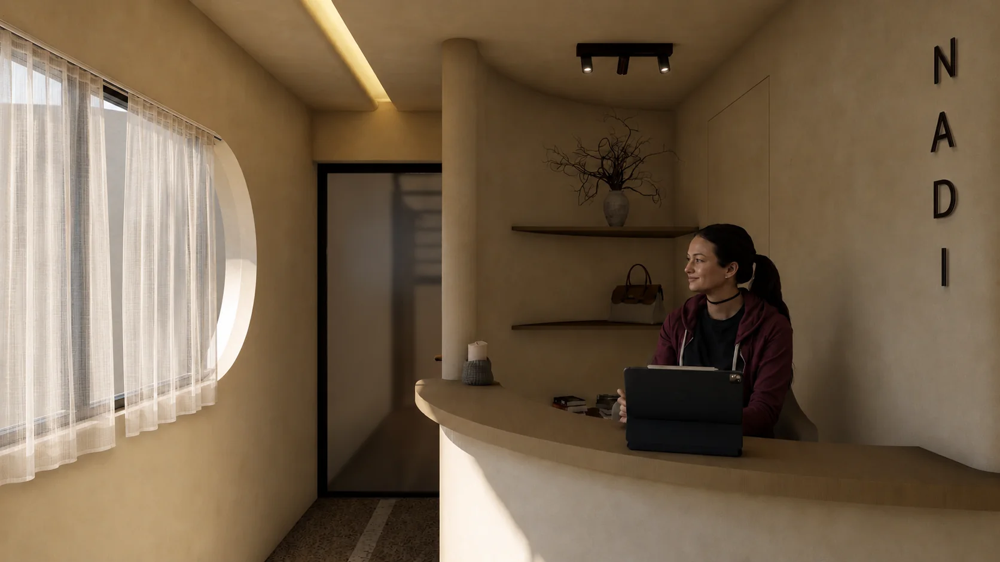
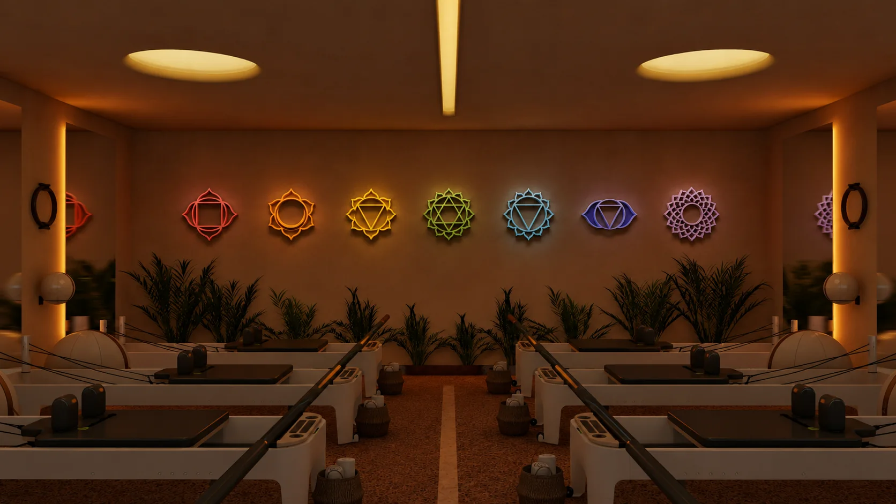
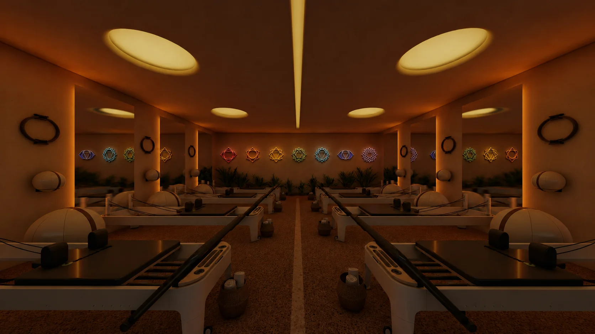

- Type
- Commercial architecture
- Location
- Querétaro, Mexico
- Year
- 2026
- Area
- 80 m²
- Status
- Conceptual proposal
- Process
-
- Idea
- Transformation
- Matter
Idea
Inspired by the nadis, the channels through which vital energy flows according to the yoga tradition, NADI was born from the intention of turning a space of reduced dimensions into an experience of connection between body, mind and spirit.
The architecture is conceived as a sensory journey. From the entrance, the continuity between floor and ceiling sets a direction through materiality and light, guiding the user towards the pilates room. At the end of the path, a composition of chakras becomes the visual and symbolic culmination of this journey.
Microcement, light wood and rustic terrazzo build an atmosphere of natural character, where textures invite one to experience the space through touch. The roughness of the floor proposes a conscious relationship with the ground when walked barefoot or in socks, while indirect lighting and greenery accompany movement and reinforce a sense of serenity and introspection.
NADI proposes an architecture that is not only contemplated, but walked through, perceived and felt. A place where every element seeks to awaken the senses and lead the user from the rhythm of the outside world to a state of calm and connection with oneself.



Process
The main challenge was translating a spiritual and sensory experience into a space of 80 m², without compromising its functionality.
The solution came from understanding the path as the project’s organizing element. Instead of relying solely on decorative objects, the architecture uses its own components —floor, ceiling, light and texture— to build a continuous spatial sequence.
Every decision answers to the same intention: making movement through the space a conscious experience, where the perception of the space begins even before the practice starts.
Technical data
- Type
- Commercial architecture / Interior design / Wellness
- Status
- Unbuilt conceptual proposal
- Materials
- Microcement, light wood, indirect LED lighting, greenery and rustic terrazzo.
- Images
- Digital architectural visualizations (renders).
- Credits
- ARQUEMIST.

“A path to disconnect from the world and find oneself again.”